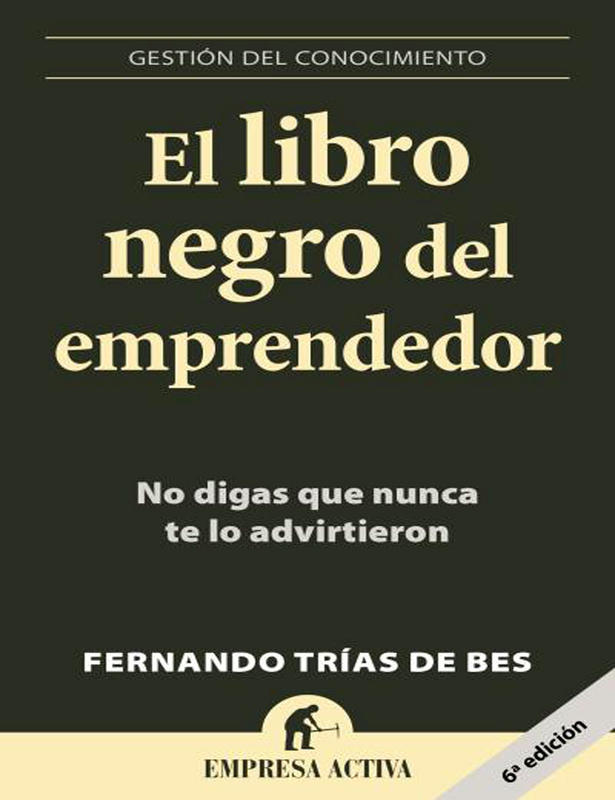

Analisis en profundidad: El libro negro del emprendedor
- Título del libro: El libro negro del emprendedor.
- Autor: Fernando Trías de Bes.
- Año de publicación: 2007.
“El libro negro del emprendedor” es quizá un libro que en primera instancia no cautiva por su título, de cierto toque pesimista, pero que una vez concluido te hace sentir satisfecho de su lectura por su sensatez, su realismo y su visión orientada al éxito sostenible.
A lo largo de sus páginas, intenta responder la pregunta indicada al inicio de la sección. Llama poderosamente la atención su magnífico fomento del autoanálisis y la autoevaluación como herramientas esenciales a utilizar antes de iniciar cualquier proyecto, ayudando a auto identificarse como un emprendedor o como un “falso emprendedor” (tal y como lo denomina el propio autor). ¿Qué mejor manera de evitar una mala decisión que siendo capaz de preverla por ti mismo gracias a los errores ajenos?
Como novedad a la mayor parte de libros para emprendedores, Fernando Trías de Bes se enfoca en los errores comunes que hacen fracasar al emprendedor, en lugar de en los factores de éxito, como primer paso para que tu iniciativa empresarial triunfe y sea sostenible a largo plazo. ¿Negativo y desalentador?, en absoluto: es un libro directo, que se enfoca en intentar aclarar los mínimos necesarios para asegurar que tu empresa no comience su andadura infectada con el virus del fracaso en sus venas. Antes de lanzarnos a lo loco, identifiquemos lo esencial, lo que no debe fallar.